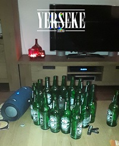
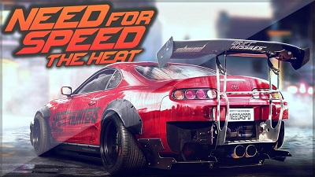

Dit ben ik
Vrijetijdsbesteding

Het weekend

Een game die ik graag speel.
Ik ben Tom, 17 jaar oud en ik kom uit Yerseke. In mijn vrije tijd spreek ik veel met vrienden af of ga ik gamen. Daarnaast zit ik ook nog op scouting. In de vakantie werk ik meestal in een mosselfabriek. Ik heb verder niet echt iets van hobbies of wat dan ook dus naast wat ik in mijn vrije tijd doe is mijn leven niet zo interessant. Een aantal eigenschappen van mij zijn: Ontspannen, realistisch en recht door zee.